Анна Качура. Укрепление ногтей, разные виды покрытий, японский маникюр и помощь при проблемах ногтей и стоп. Благодаря профессиональной технике и опыту у меня безопасно и комфортно.
Приём только по предварительной записи. Пн—Вс, 10:00—20:00.
Однотонное покрытие, френч, нюд, блёстки и красный — маникюр и педикюр в одном кабинете, поэтому руки и ноги можно закрыть за один визит.
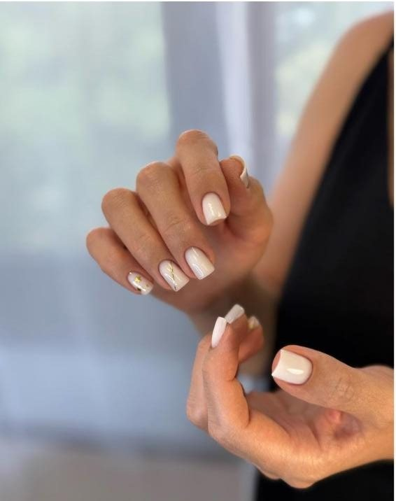
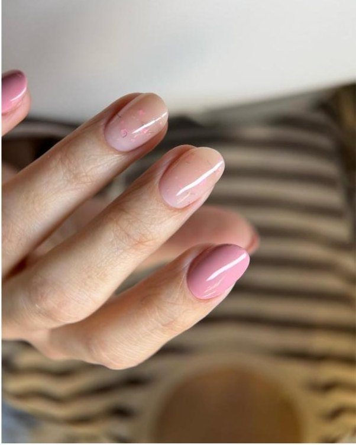
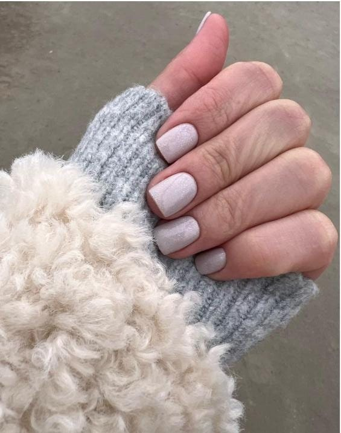
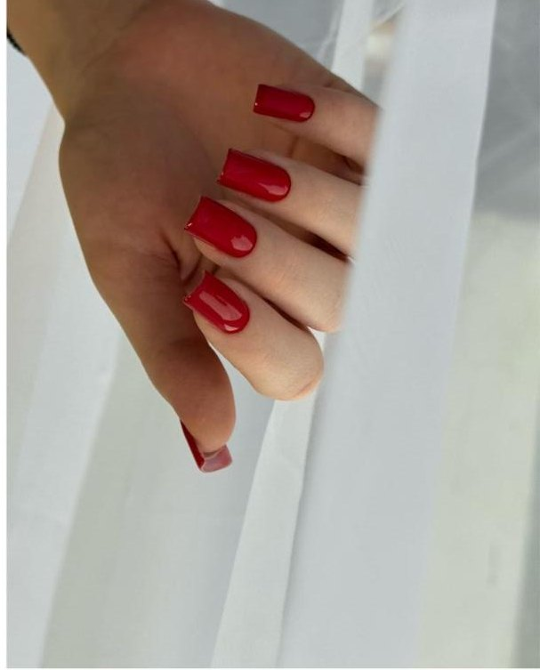
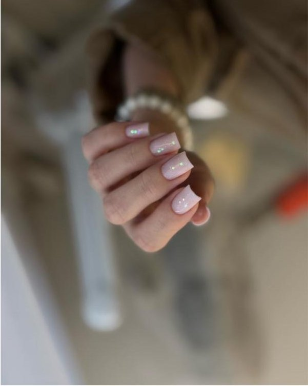
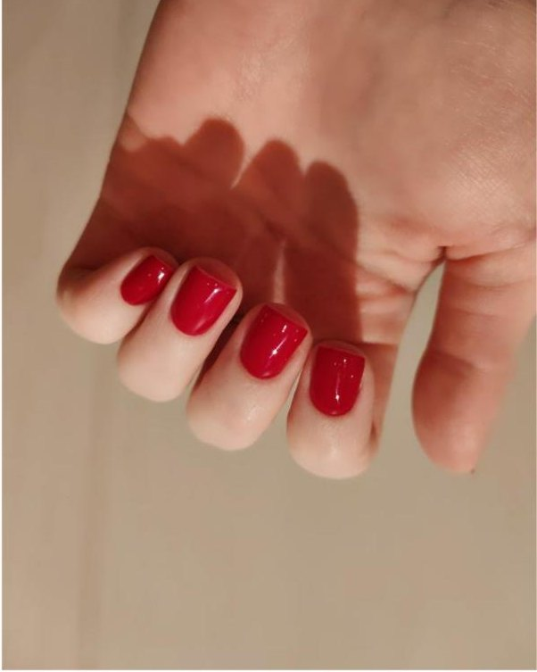
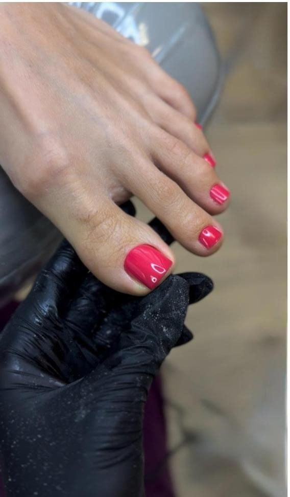
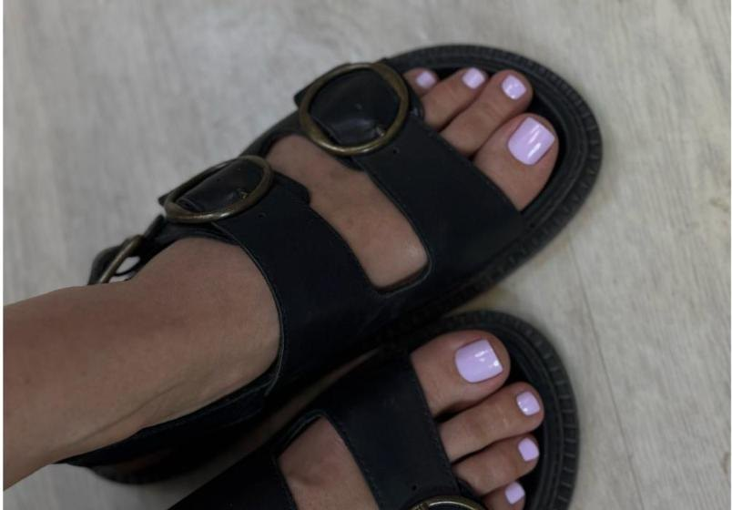
Гигиеническая обработка пальцев, Smart-педикюр стоп, покрытие гель-лаком. Маникюр и педикюр ведёт один мастер — руки и ноги можно закрыть за один визит.
Фотографии из карточки 2ГИС.
Прайс-лист кабинета. Точная стоимость подологической работы зависит от объёма и называется на приёме.
Цены не являются публичной офертой (ст. 437 ГК РФ). Оплата — наличными или переводом с карты.
Если вы хотите сохранить ноготь, я советую обращаться к подологу. Редко, но бывают случаи, когда подолог направляет к хирургу — ситуация выходит за пределы его компетенции. Это единичные случаи: в 99% при врастании ногтей подолог способен помочь. Из записи мастера во ВКонтакте.
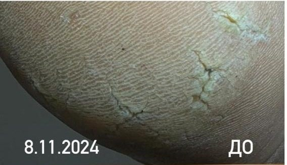
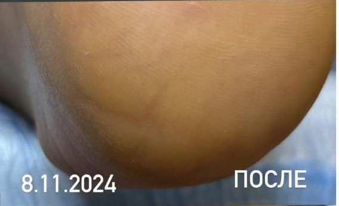
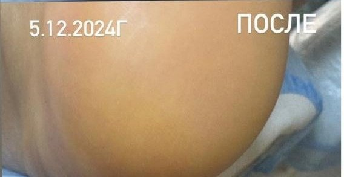
Один случай: до обработки, сразу после и через месяц. Результат индивидуален и не гарантирован — он зависит от исходного состояния и выполнения рекомендаций. Фотографии из карточки 2ГИС.
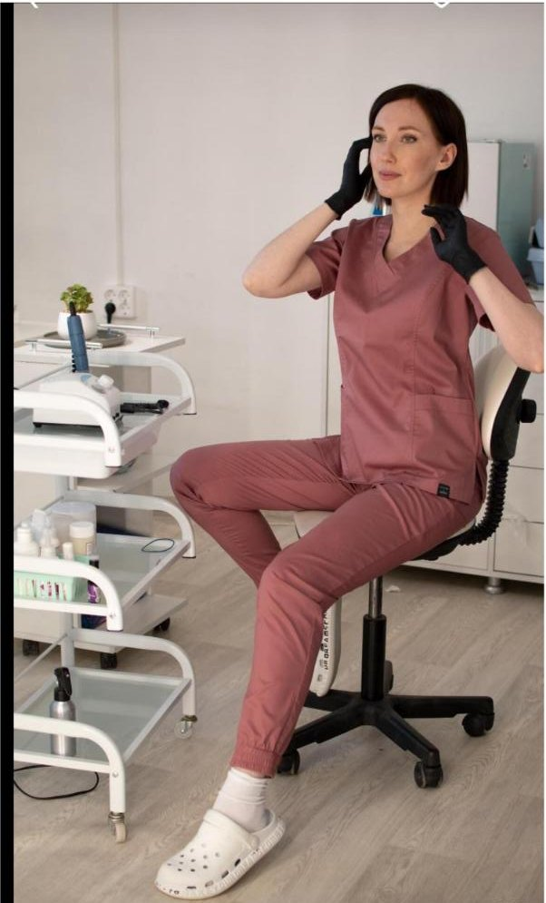
Маникюр, педикюр и подология. Работаю в Кировском районе Волгограда, сообщество ВКонтакте веду с 2016 года. Многие клиенты ходят по нескольку лет — и на руки, и на ноги.
Отдельный кабинет на четвёртом этаже, приём по записи — вы не пересекаетесь с очередью и никого не ждёте.
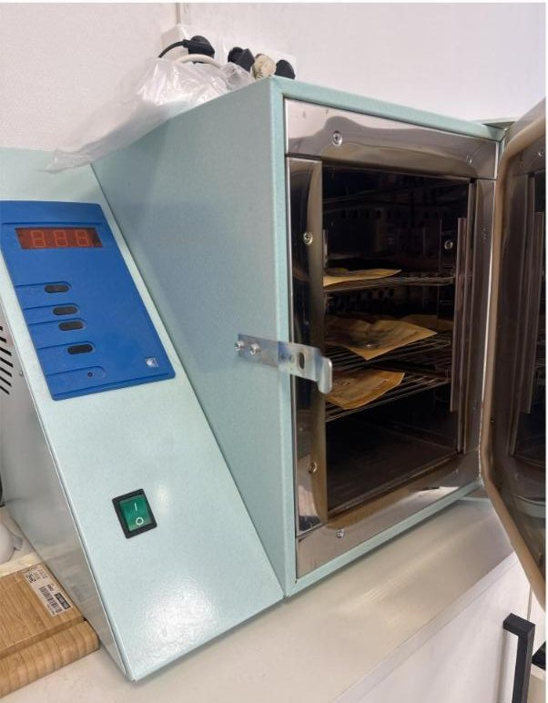
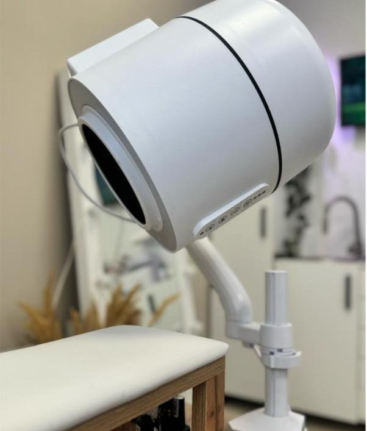
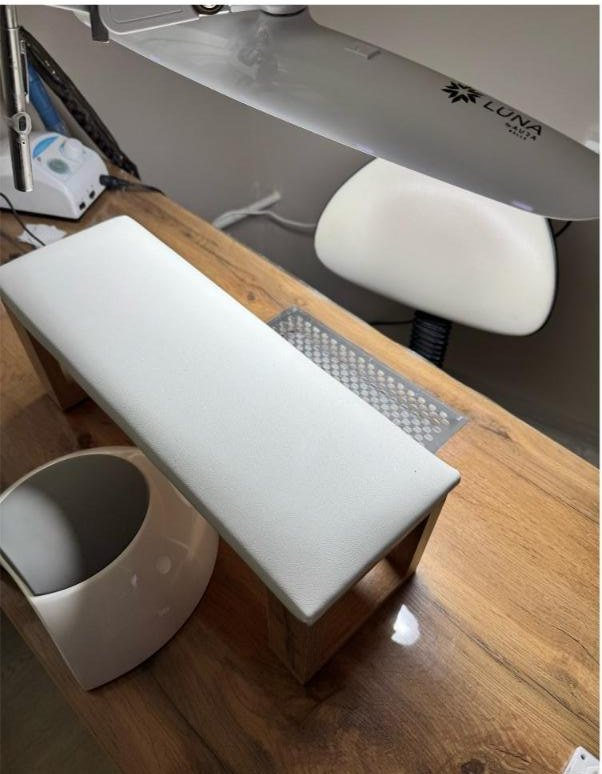
Инструмент проходит обработку в сухожаровом шкафу и хранится в крафт-пакетах.
«Благодаря профессиональной технике и опыту у меня безопасно и комфортно» — из описания сообщества.
Маникюр, педикюр и подологию ведёт один человек — вы не пересказываете историю заново.
«Не сижу вся в пыли и мне не больно при обработке»
«Полное устранение дискомфорта и отсутствие болевых ощущений»
«Аккуратно работает с кутикулой, ни единого пореза»
«Хожу и на маникюр, и на педикюр уже около 5 лет»
5,0 из 5 по 24 оценкам в 2ГИС. Цитаты сокращены, полные отзывы — в карточке 2ГИС.
Волгоград, Кировский район,
улица 64-й Армии, 44 — 4 этаж, кабинет 416
Микрорайон Развилка, 400079. Приём по предварительной записи.
Напишите во ВКонтакте или позвоните — подберём время.
Пн—Вс, 10:00—20:00.
Наличными или переводом с карты.
Улица 64-й Армии, 44 — административное здание в микрорайоне Развилка, Кировский район. Кабинет на четвёртом этаже, номер 416. Рядом остановка «Энергетический колледж».